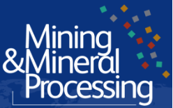
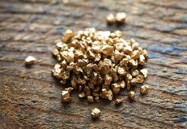

was founded to provide specialized process recovery solutions
to operations in mining, energy, waste water treatment, and chemicals production. We enable
organizations in these spheres to maximize their profit through the use of technology to
recover materials that would ordinarily be classified as waste, all powered by the world’s
most efficient material recovery systems.
The Advamet Difference
What separates us from the rest?

Advamet specialises in the recovery of ultra-fine solids which is usually be classified as
waste. Our strength lies in our ability to harness the power of modular centrifugal
separation units that operate at high speeds of rotation, producing high ‘G’ forces which
allow for the separation and recovery of materials (less than 50 microns) that would be
previously unrecoverable using conventional jigs, spirals, cones, or shaking tables.

At Advamet, we offer you the opportunity to test and evaluate the benefits of our technology as a
first step to helping you make an informed decision backed by empirical evidence. We will never ask
you to invest in a project with no net positive value.
Our consultants will evaluate your current situation and goals.
We set up 30-day no risk testing platform for you to use our centrifuge unit to process and
recover materials that would normally be unrecoverable.
Evaluate the result.
Lease or Rent our centrifugal gravity separating machine and
Increase your bottom line from the recovered material
Contact Us
Feel free to reach out to us with any questions or inquiries: